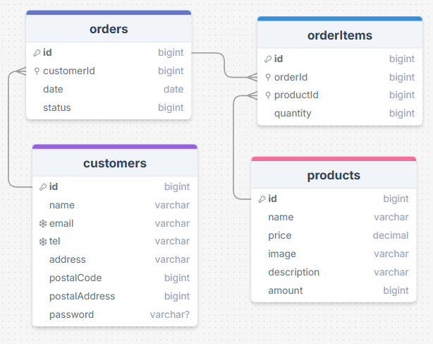

Fanikauppa 2.0
Yleistä
Tehdään fanikaupasta tietokantapohjainen web-sovellus. Tarkoitus on, että sovellus hakee tuotteet tietokannasta ja uusi tilaus voidaan tallettaa tietokantaan tilauksen päätteeksi.
Projekti
Tee uusi kansio fanikauppa2 ja sen alle alikansiot database ja backend.
Tietokanta
Toteuta tietokanta kansioon database. Tee migrations ja seed -tiedostot joilla tietokanta voidaan luoda helposti uudelleen. Tietokannan products-taulussa on kenttä amount jonka avulla voit simuloida ostoskorissa olevaa tuotemäärää sovelluksessasi.

Backend
Aloita sovelluksen backend. Toteuta ensimmäisenä vain GET /products sekä POST /orders. Tee testi joka hakee kaikki tuotteet sekä testi joka tallettaa uuden tilauksen tietokantaan.
GET http://localhost:3001/products HTTP/1.1
Tilauksen lisääminen lisää uuden asiakkaan ja tilatut tuotteet:
POST http://localhost:3001/order HTTP/1.1
content-type: application/json
{
"status": 0,
"date": "2026-01-10T17:30:31.098Z",
"customer": {
"name": "test",
"email": "test@test.com",
"tel": "040 123 1234",
"address": "Testikatu 2",
"postalCode": "33720",
"postalAddress": "Tampere"
},
"items": [
{
"productId": 1,
"quantity": 2
},
{
"productId": 2,
"quantity": 1
}
]
}
Frontend
Voit kopioida vanhan fronend-kansion fanikauppa2-kansion alle. Frontend muuttuu jonkin verran nyt kun käytetään tietokantaa eikä kovakoodattuja tietoja.
- Tee ensimmäisenä tuotteiden näyttäminen kaupassasi.
- Toteuta tilauksen lisääminen siinä vaiheessa kun käyttäjä on syöttänyt yhteystiedot ja paina Lähetä tilaus-painiketta.
Edistyneet toiminnot
Autentikaatio
Muuta sovellus toimimaan siten, että käyttäjä voi rekisteröityä asiakkaaksi. Kun käyttäjä on kirjautunut tilaus hyödyntää suoraan kirjautuneen asiakkaan tietoja.
Tilauksien tarkastelu
Lisää toiminnallisuus jossa käyttäjä voi tarkastella aikaisemmin tekemiään tilauksia.